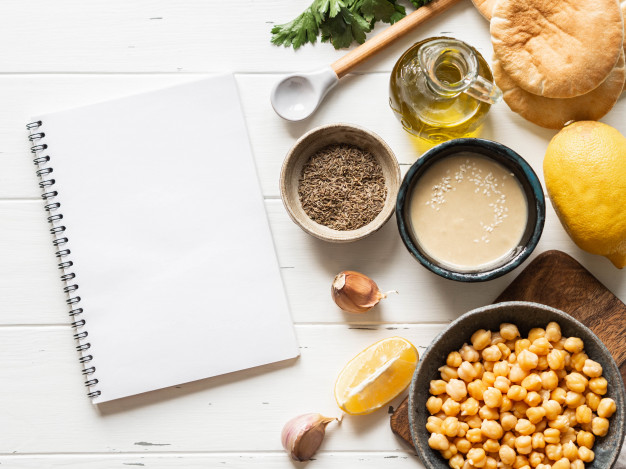
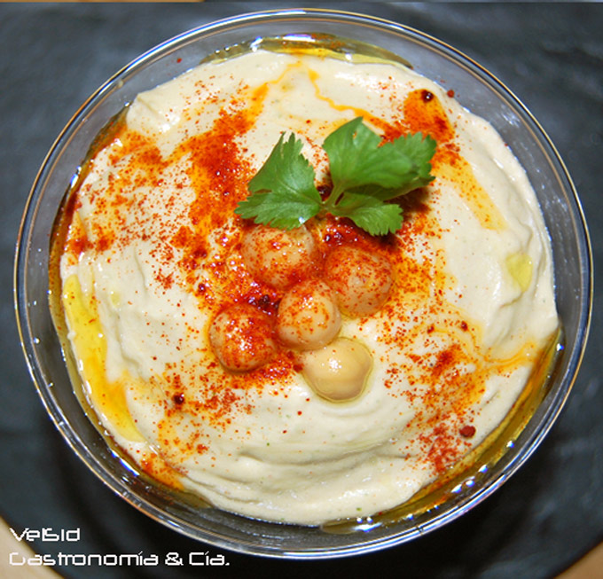

Esta receta hace hummus rápido y sabroso, sin ensuciar. Se ha adaptado de varias recetas diferentes que he leído a lo largo de los años.
Hummus es una deliciosa pasta espesa que se usa mucho en los platos griegos y del Medio Oriente. Es muy sabroso con ensalada, carnes a la parrilla y panes pitta.
Ingredientes

1 lata (400 g) de garbanzos (garbanzos)
175 g de tahini
6 tomates secos
Medio pimiento rojo
Una pizca de pimienta de cayena
1 diente de ajo
Una pizca de aceite de oliva
Instrucciones

Retire la piel del ajo y pique en trozos grandes
Retire todas las semillas y el tallo del pimiento, y pique en trozos grandes
Agregue todos los ingredientes en un procesador de alimentos.
Procese todos los ingredientes en una pasta.
Si quieres un hummus "grueso" grueso, procesalo por un corto tiempo
Si quieres un hummus suave, procesalo por más tiempo
Para obtener un sabor diferente, puedes mezclar una pequeña cantidad de limón y cilantro, ají, lima y chipotle, harissa y menta, o espinacas y queso feta. Experimente y vea lo que funciona para usted.
Almacenamiento
Refrigere el hummus terminado en un recipiente sellado. Debería poder usarlo durante aproximadamente una semana después de haberlo hecho. Si comienza a burbujear, definitivamente debes descartarlo.
Hummus es adecuado para congelar; debe descongelarlo y usarlo dentro de un par de meses.
Preparación del hummus
En este video te presentamos cómo preparar esta deliciosa receta.